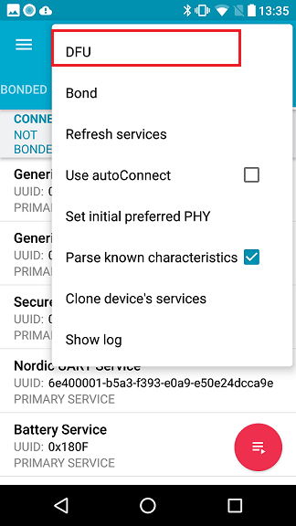

nRF Connect 是Nordic出品的通用蓝牙软件有移动版和PC版两种
此软件功能非常强大，强烈建议安装
下载
nRF Connect for Mobile
nRF Connect for Desktop
PC版本Connect使用简单，每个功能对应一个插件，安装对应插件即可。比如想烧录hex就安装Programmer插件就可以了
下面针对手机版本nRF Connect进行一些使用技巧说明
1. 查看本机蓝牙相关参数
nRFConnect可以查看本机蓝牙支持的特性
2. nRFConnect 查看自身Log
nRFConnect App可以查看自身收到的蓝牙数据
使用App连接设备后，从最右上角进入Show log界面即可查看App收到的数据
3. nRFConnect 查看其它App的蓝牙通信数据
使用透传Demo进行演示
保持nRFConnect运行状态, 启动要监听的蓝牙App, nRFToolbox
使用nRFTollbox连接设备，此时会弹出提示框，提示是否要监听
设备向app发送 1234567890 和 abcdefghijk，查看log
nRFToolbox收到的数据
nRFConnect监听到的数据
4. DFU
nRFConnect支持DFU, 最右上角进入可选菜单，选择”DFU”即可进入DFU流程
- 进入DFU流程
 - 选择升级类型(zip)
- 选择升级文件
- 等待升级完成